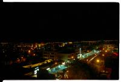

| Jeudi 8 Février, bus de Amman vers Aquaba
On s'est reveillés à 11H! Il est temps de se mettre à l'heure
locale et pas seulement à l'heure des vacances! Special médecine:
Khaled veut que je frotte doucement chaque jour mon eczéma
avec une brosse à dents puis que j'y frotte de l'ail pendant
une semaine et je ne devrais plus en avoir! Ce qui est sûr,
c'est que les vampires ne vont pas me manger!!! On a choisi
un bus tout confort avec la télé. En fait au bout d'une ½
heure de cris dans les oreilles, j'ai mal à la tête et Lionel
aussi! Le film a l'air drôle mais c'est quand même pas la
peine de mettre le son à donf! Le bus fonce sur la route qui
suit la frontière entre Israël et Jordanie. Au programme:
valéee du Jourdain très verte, mer morte, ensuite le désert.
Vendredi 9 Février, Aquaba
Nous sommes à la plage à Aqaba, celle des jordaniens. Comme
c'est vendredi aujourd'hui, il y a plein de monde (vendredi=notre
samedi). Les hommes se baignent, font bronzette, fument le
narguilé. Les femmes restent emmaillotées dans leurs grandes
robes, foulard sur la tête, sur le sable. Ca doit gratter.
Quelques-unes se baignent quand même, toutes habillées et
après, elles essaient de se sécher dans le sable (c'est quand
même l'hiver). Qu'est-ce qu'être une femme ici ne doit pas
être drôle...
En face de nous, l'Egypte et l'Israël qui donnent aussi sur
cette anse de la mer rouge. L'Israël doit être à 1 ou 2 Km,
l'Egypte à une vingtaine (?). La mer rouge et ses jolis poissons
s'étendent sous nos yeux. Derrière nous les montagnes du désert,
rouges et nues, tres belles avec le jeu des ombres. Il fait
beau 22 degrès.
Tout à l'heure, on marchait le long de la plage et on a rencontré
Mohammed, un loueur de " glass boat " (ou glass baot comme
ils écrivent souvent). Il nous a invités à boire le thé (plus
une orange) chez lui très gentiment. La, il nous a montré
ses 2 livres ou il apprend l'anglais. Il a 35 ans mais je
lui en aurais donné 45 facile, ça doit être le soleil. On
a papoté devant la télé assis par terre sur les matelas.
Samedi 10 Février, Aquaba
Deuxieme jour à Aqaba sous les cocotiers. Visite du caravanserail
fortifié. Tres chouette. On a développé les photos (35FF pour
une pellicule de 24, bonne qualité). Lionel a un debut de
tourista qui le torture, Vite! du smecta! Jolie ballade sur
le port de pêche et thé sur la plage pour le coucher du soleil.
C'est excellent, un thé nature avec du sucre si on veut et
des feuilles de menthe fraiche. Contrairement à Bali, île
hindouiste, la Jordanie, pays musulmam est très propre (enfin
en dehors des sacs en plastiques qui volent au gré du vent
et de quelques décharges sauvages). Les hôtels où nous allons
sont très simples mais propres, les sanitaires aussi. Par
contre, y'a pas à dire, la religion musulmane est hyper bruyante:
le muezzin qui chante, pour ne pas dire hurle, dans son micro
à 5 heure du mat, c'est pas cool pour le repos. Ca casse mon
petit train du sommeil. Mais si! Chaque nuit comporte entre
4 et 6 petits trains de 1H30 a 2H, les cycles, et là, boom
reveil brutal hors cycle! Il faut dire qu'en plus on a choisi
le Petra hotel, juste en face du minaret! Mais bon, la vue
du 4eme étage est superbe: mer rouge, Israël, Egypte. On a
même eu droit à un feu d'artifice en Israël hier soir!
Suite du voyage : Plongées en mer Rouge
|
Jordanie
Amman
|
Jordanie
Aquaba
|
Jordanie
Aquaba
|

Jordanie
Aquaba
|
Jordanie
Aquaba
|
|
|